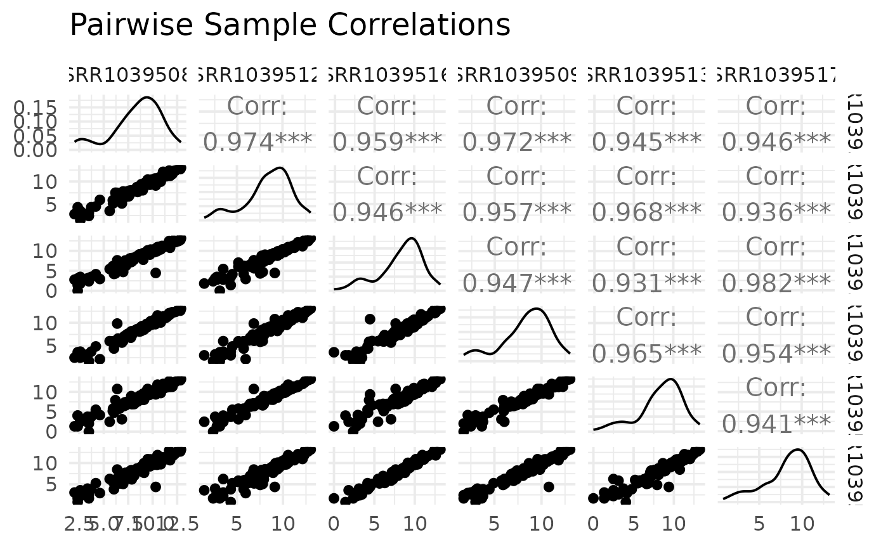

Plot pairwise correlations between samples
Source:R/bioccheck_roxygen_fixes.R, R/viz_related.R
get_pairwise_corr_plot.RdUses GGally::ggpairs on normalized expression to display correlations among samples from selected groups/genes.
Arguments
- x
A
VISTAobject.- sample_group
Optional character vector of groups (from the column specified by
group_column) used to subset samples.- group_column
Optional column name in
sample_infodefining the grouping used for filtering.- genes
Optional character vector of gene IDs to include; defaults to all genes.
- sample_order
Ordering for selected samples:
"input"keeps the current order, while"group"sorts bygroup_column.- value_transform
Value transformation:
"log2"(default) or"none".- title
Plot title.
Examples
v <- example_vista()
p <- get_pairwise_corr_plot(v)
print(p)
